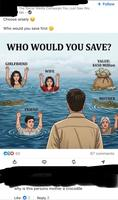

0

Amazon's Luna cloud gaming service is making some changes, reports Engadget:
It's no longer possible to buy Ubisoft+ and Jackbox Games subscriptions or standalone games through Luna. Amazon will automatically cancel any active subscriptions bought through Luna at the end of customers' next billing cycle. If you have a Ubisoft+ subscription that you bought directly from Ubisoft instead, you'll still be able to access games on that service through Luna until June 10. The Bring Your Own Library option — which allows users to play games they own on the likes of EA, GOG and Ubisoft on Luna — is going away too. You won't be able to access games from those storefronts via Amazon's streaming service after June 3.
If you bought any games outright on Luna, you'll still be able to play them there until June 10. Unlike Google did when it shut down Stadia, Amazon isn't offering refunds for those purchases. However, you'll still have access to them through the respective third-party platform that's linked to your account, be it the EA App, GOG Galaxy or Ubisoft Connect. That doesn't exactly help folks who don't have powerful-enough systems to play more demanding games and were relying on Luna.
For those users, Kotaku complains, "you'll essentially lose access to your purchased games in June unless you buy some hardware to play games like Star Wars Outlaws or set up a different streaming option..."
They describe Luna as Amazon's "barely talked about, struggling game streaming service"...
On April 10, Amazon announced that it is "always looking for ways to better serve our players" and that "feedback" has made it "clear" that gamers who use Luna want "easy access to great games." And because more of that content is now offered via Amazon Prime, the company has decided that the best way to "serve" you and other users is to rip out most of Luna's gaming options and remove access to paid games you bought in the past. Do you feel better served...?
Launched in 2020, Amazon Luna has never been much of a big hit for the company, which has struggled to even figure out what to do with it. Initially, it was offered up as a Stadia competitor, providing access to big and small third-party games. This apparently didn't work out for Amazon. So in 2025, Amazon officially announced plans to pivot Luna to a service focused on Jackbox-like casual games. This latest shake-up for Luna further focuses the service on these kinds of games and will put everything available on the service behind different sub tiers, similar to Game Pass.
Their conclusion? "This is all just a great reminder to never, ever, ever, ever buy a video game through a streaming service. At least you can download digital games offline and make backups for later."
Read more of this story at Slashdot.
It's the first time a major U.S. newsroom has gone on strike partly to demand protections from AI-related layoffs, according to a report from Nieman Lab.
They noted that one of the picketer's signs read "Thoughts not bots," :
On Wednesday, roughly 150 members of the Propublica Guild, one of the largest nonprofit newsroom unions in the country, went on a 24-hour strike. About two dozen Guild members picketed ProPublica's headquarters in New York City's Hudson Square neighborhood during working hours, as simultaneous picket lines formed in front of the publication's offices in Chicago and Washington D.C...
The Guild has been negotiating its first collective bargaining agreement for two and a half years, and the one-day action was intended to put new pressure on ProPublica's management to agree to several contract proposals. The union is seeking "just cause" protections for terminations, wage increases to keep up with the rising cost of living, and contract language that would prohibit layoffs resulting from AI adoption... Beyond the strike, the ProPublica Guild has also taken its dispute over newsroom AI adoption to the National Labor Relations Board (NLRB). On Monday, the Guild filed an unfair-labor-practice charge, citing a "unilateral implementation of AI policy." The filing claims that ProPublica published AI editorial guidelines on its website last month, without first bargaining with union members over its tenets and language... A petition launched Wednesday calling for ProPublica to agree to the Guild's contract terms had received roughly 4,200 signatures by Thursday morning...
Susan DeCarava, the president of The NewsGuild of New York, joined strikers in front of the ProPublica offices yesterday. During a spare moment on the picket line, she told me that while this strike may be setting precedent for her union, it likely won't be the last over AI adoption in newsrooms. "We're going to see more and more concentrated conflicts between media bosses and journalists and media workers over who has a say and how AI is used in their workplaces," she said. For one, The New York Times Guild is currently in contract negotiations after its last agreement expired in February. Already, AI language has taken center stage in the Guild's initial bargaining sessions, including over a proposal that would see Guild members receive a share of the revenue earned when their work is licensed for AI training.
"Management has offered expanded severance for AI-related layoffs as a counter proposal..." according to the article.
Read more of this story at Slashdot.
In 2024 the Verge's consumer tech reporter paid $173 for a WD Black SN850X 2TB SSD. But "now that same SSD costs $649..."
"Like with RAM, demand from the AI industry is swallowing up supply from a limited number of manufacturers, leading to a drastic reduction in the inventory that's available to consumers" — and skyrocketing prices:
The price on my WD Black drive nearly quadrupled since November 2025, and consumer SSDs across the board are seeing similar increases, much like with RAM. The 4TB version of the popular Samsung 990 Pro SSD previously cost $320, but will now run you nearly $1,000. External SanDisk SSDs saw a 200 percent price hike at the Apple Store in March....
According to price trends from PC Part Picker, NVMe SSD prices began ticking upward in December 2025, with prices on 256GB to 4TB SSDs now double or triple what they were just a few months ago, and continuing to climb.
Read more of this story at Slashdot.
Critics say social media is engineered to be as addictive as tobacco or gambling, writes the Washington Post — while adding that "the science has been moving in parallel with the court's recognition."
A growing body of research links heavy social media use not only to declines in mental health but to measurable cognitive effects — on attention, memory and focus — that in some studies resemble accelerated aging. Science also suggests we have more control than we realize when it comes to reversing this damage, and the solution is surprisingly simple: Take a break... "Digital detoxes" can sound like a fad. But in one of the largest studies to date, published in PNAS Nexus and involving more than 467 participants with an average age of 32, even a short time away produced striking results — effectively erasing a decade of age-related cognitive decline.
For 14 days, participants used a commercially available app, Freedom, to block internet access on their phones. They were still allowed calls and text messages, essentially turning a smartphone into a dumb phone. Their time online decreased from 314 minutes to 161 minutes, and by the end of the period the participants had improvements in sustained attention, mental health as well as self-reported well-being. The improvement in sustained attention was about the same magnitude as 10 years of age-related decline, the researchers noted, and the effect of the intervention on depression symptoms was larger than antidepressants and similar to that of cognitive behavioral therapy.
But two things were even more mind-blowing... Even those people who cheated and broke the rules after a few days seemed to have positive effects from the break; and in follow-up reports after the two weeks, many people reported the positive effects lingered. "So you don't have to necessarily restrict yourself forever. Even taking a partial digital detox, even for a few days, seems to work," Kushlev said.
The article also notes a November study at Harvard published in JAMA Network Open where nearly 400 people 'found that even a short break can make a measurable difference: After just one week of reduced smartphone use, participants reported drops in anxiety (16.1 percent), depression (24.8 percent) and insomnia (14.5 percent)..."
"Other experiments point in the same direction — whether decreasing social media use by an hour a day for one week or stepping away from just Facebook and Instagram."
Read more of this story at Slashdot.
An anonymous reader quotes a report from the New York Times: As the Trump administration seeks to fill a national shortage of air traffic controllers, officials are targeting a new talent pool: gamers. The Federal Aviation Administration on Friday is making a recruiting push aimed at avid players of video games, as the agency strives to fill thousands of vacancies that lawmakers have said leave the traveling public less safe. In a new YouTube ad, the agency is using flashy graphics and the promise of six-figure salaries to convince video game enthusiasts to apply their trigger fingers in service of air safety.
In recent years, video gamers have emerged as a target demographic for recruiters at a number of federal agencies, including the military and the Department of Homeland Security. They are welcomed for their hand-eye coordination, quick decision-making in complex environments and ability to remain focused on screens for hours on end. "To reach the next generation of air traffic controllers, we need to adapt," Transportation Secretary Sean Duffy said in a statement. Focusing recruiting efforts on gamers, he added, "taps into a growing demographic of young adults who have many of the hard skills it takes to be a successful controller."
[...] The F.A.A. plans to begin prioritizing recruiting gamers over more traditional avenues like college fairs, officials said, pointing out that only 25 percent of controllers have a traditional college degree, while the vast majority appear to have logged hours gaming. During the presidential transition in 2024, incoming Trump administration officials polled about 250 new air traffic academy graduates over six weeks. Only two of those interviewed were not gamers, according to F.A.A. officials [...]. Students who failed out of the training academy were not similarly queried, officials said, though they have plans to conduct more comprehensive exit interviews in the future. Still, the overwhelming presence of gaming habits among graduates tracked with what they were hearing anecdotally from controllers already certified to work in towers and other air traffic facilities, the officials said, many of whom liked to play video games during breaks in their shifts.
Read more of this story at Slashdot.
NASA's Artemis II crew safely splashed down off the California coast after completing a 10-day trip around the moon and back. "This is not just an accomplishment for NASA," sad NASA Administrator Jared Isaacman. "This is an accomplishment for humanity, again, a historic mission to the moon and back." From a report: Isaacman is aboard the USS John. P Murtha Navy recovery vessel, where the astronauts will be brought once they've been retrieved from the Orion capsule, and he shared "there is a lot to celebrate right now on on a mission well accomplished for Artemis II."
Isaacman also complimented the crew as "absolutely professional astronauts, wonderful communicators and almost poets" "" as well as "ambassadors from humanity to the stars." "I can't imagine a better crew than the Artemis II crew that just completed a perfect mission right now. We are back in the business of sending astronauts to the moon and bringing them back safely.
This is just the beginning. We are going to get back into doing this with frequency, sending missions to the moon until we land on it in 2028 and start building our base." Isaacman also said it's time to start preparing for Artemis III, expected to launch in 2027. You can watch the moment of the splashdown here.
Read more of this story at Slashdot.
Bruce66423 shares a report from the Guardian: The European parliament has blocked the extension of a law that permits big tech firms to scan for child sexual exploitation on their platforms, creating a legal gap that child safety experts say will lead to crimes going undetected. The law, which was a carve-out of the EU Privacy Act, was put in place in 2021 as a temporary measure allowing companies to use automated detection technologies to scan messages for harms, including child sexual abuse material (CSAM), grooming and sextortion. However, it expired on April 3, and the EU parliament decided not to vote to extend it, amid privacy concerns from some lawmakers.
The regulatory gap has created uncertainty for big tech companies, because while scanning for harms on their platforms is now illegal, they still remain liable to remove any illegal content hosted on their platforms under a different law, the Digital Services Act. Google, Meta, Snap and Microsoft said they would continue to voluntarily scan their platforms for CSAM, in a joint statement posted on a Google blog. Bruce66423 adds: "Child abuse as the excuse for avoiding privacy protections. Who would have thought it?"
Read more of this story at Slashdot.
San Francisco police arrested a suspect after a Molotov cocktail was allegedly thrown at Sam Altman's home and threats were later made outside OpenAI's headquarters. "Thankfully, no one was hurt," said OpenAI in a statement to WIRED. "We deeply appreciate how quickly SFPD responded and the support from the city in helping keep our employees safe. The individual is in custody, and we're assisting law enforcement with their investigation." From the report: "At approximately 3:45am PT, an unidentified individual approached Sam's residence and threw an incendiary device toward the property. The device landed nearby and extinguished. There were no injuries and only minimal damage was reported," the message to staff reads. "Shortly afterward, an individual matching the suspect's description was contacted by security outside MB1," the message continues, referring to OpenAI's headquarters in San Francisco's Mission Bay neighborhood. "This person made threatening statements about the building."
OpenAI's corporate security team told staff it is cooperating with law enforcement on an investigation, and that employees may notice an increased police and security presence around the office on Friday. The security team said that the company's offices remain open, but employees were advised to "not let anyone tailgate into the building."
"Officials subsequently confirmed that the suspect was arrested outside the OpenAI's Third Street offices as he threatened to burn down the building," reports the Financial Express.
UPDATE: Sam Altman has responded to the incident.
Read more of this story at Slashdot.
A 17,000-word expose in the New Yorker reveals "several executives connected to OpenAI have expressed ongoing reservations about Altman's leadership." Reporters Ronan Farrow and Andrew Marantz spoke to "a hundred people with firsthand knowledge of how Altman conducts business," including current and former OpenAI employees and board members.
Among other revelations, internal messages from a few years ago show that OpenAI executives and board members "had come to believe that Altman's omissions and deceptions might have ramifications for the safety of OpenAI's products..."
At the behest of his fellow board members, [OpenAI cofounder] Sutskever worked with like-minded colleagues to compile some seventy pages of Slack messages and H.R. documents, accompanied by explanatory text... The memos, which we reviewed, have not previously been disclosed in full. They allege that Altman misrepresented facts to executives and board members, and deceived them about internal safety protocols. One of the memos, about Altman, begins with a list headed "Sam exhibits a consistent pattern of . . ." The first item is "Lying"....
In a tense call after Altman's firing, the board pressed him to acknowledge a pattern of deception. "This is just so fucked up," he said repeatedly, according to people on the call. "I can't change my personality." Altman says that he doesn't recall the exchange.... He attributed the criticism to a tendency, especially early in his career, "to be too much of a conflict avoider." But a board member offered a different interpretation of his statement: "What it meant was 'I have this trait where I lie to people, and I'm not going to stop.' " Were the colleagues who fired Altman motivated by alarmism and personal animus, or were they right that he couldn't be trusted?
Friday Altman responded in part to the article. ("I am not proud of being conflict-averse, which has caused great pain for me and OpenAI," he wrote in a blog post. "I am not proud of handling myself badly in a conflict with our previous board that led to a huge mess for the company.")
But the article also assembled similar stories from throughout Altman's career:
- At Altman's earlier startup Loopt, "groups of senior employees, concerned with Altman's leadership and lack of transparency, asked Loopt's board on two occasions to fire him as C.E.O.," according to Keach Hagey, author of the Altman biography The Optimist.
- During Altman's time as president of Y Combinator, "several Silicon Valley investors came to believe that his loyalties were divided. An investor told us that Altman was known to 'make personal investments, selectively, into the best companies, blocking outside investors.'" The article adds that in private, Y Combinator co-founder Paul Graham "has been unambiguous that Altman was removed because of Y.C. partners' mistrust... On one occasion, Graham told Y.C. colleagues that, prior to his removal, 'Sam had been lying to us all the time.'"
- "In a meeting with U.S. intelligence officials in the summer of 2017, he claimed that China had launched an 'A.G.I. Manhattan Project,'" the article points out, "and that OpenAI needed billions of dollars of government funding to keep pace...." But one intelligence official "after looking into the China project, concluded that there was no evidence that it existed: 'It was just being used as a sales pitch.'"
- As California lawmakers considered safety testing for AI model, one legislative aide complained of "increasingly cunning, deceptive behavior from OpenAI". OpenAI later subpoenaed some of the bill's top supporters (and OpenAI critics), in some cases asking for their private communications to investigate whether Elon Musk was funding them. [The article notes an ongoing animosity between Altman and Musk. "When Altman complained on X about a Tesla he'd ordered, Musk replied, 'You stole a non-profit.'"]
And "Multiple prominent investors who have worked with Altman told us that he has a reputation for freezing out investors if they back OpenAI's competitors."
[M]ost of the people we spoke to shared the judgment of Sutskever and Amodei: Altman has a relentless will to power that, even among industrialists who put their names on spaceships, sets him apart. "He's unconstrained by truth," the board member told us. "He has two traits that are almost never seen in the same person. The first is a strong desire to please people, to be liked in any given interaction. The second is almost a sociopathic lack of concern for the consequences that may come from deceiving someone."
The board member was not the only person who, unprompted, used the word "sociopathic." One of Altman's batch mates in the first Y Combinator cohort was Aaron Swartz, a brilliant but troubled coder who died by suicide in 2013 and is now remembered in many tech circles as something of a sage. Not long before his death, Swartz expressed concerns about Altman to several friends. "You need to understand that Sam can never be trusted," he told one. "He is a sociopath. He would do anything."
Multiple senior executives at Microsoft said that, despite [CEO Satya] Nadella's long-standing loyalty, the company's relationship with Altman has become fraught. "He has misrepresented, distorted, renegotiated, reneged on agreements," one said... The senior executive at Microsoft said, of Altman, "I think there's a small but real chance he's eventually remembered as a Bernie Madoff- or Sam Bankman-Fried-level scammer."
Read more of this story at Slashdot.
"Every single Star Trek series has been canceled..." reports ScreenRant. "There is "no Star Trek in production or greenlit for the first time in nearly a decade."
While there were five active Star Trek series just a few years ago, Star Trek: Strange New Worlds filmed its fifth and final season in the fall of 2025, and Star Trek: Starfleet Academy "wrapped filming its second and final season at the end of February." (Though ironically, both Star Trek series still have seasons yet to premiere, with two season of Strange New Worlds mean it may continue airing through 2027.)
TrekCentral reports that the sets for Star Trek: Starfleet Academy are now being torn down... There will be a local online auction for parts of the set on Friday. Additionally, Star Trek: Strange New Worlds' sets are also being taken down... Star Trek: Starfleet Academy boasted the largest sets ever built for Star Trek. The demolition of Starfleet Academy's stunning sets includes the loss of the multi-level atrium, which had the Starfleet Wall of Heroes, the USS Athena's bridge, and the classrooms.
Read more of this story at Slashdot.
An anonymous reader quotes a report from Ars Technica: The Trump administration has stepped up an effort to unmask a Reddit user who criticized Immigration and Customs Enforcement (ICE). After failing to obtain information through a summons issued (PDF) to Reddit, the government reportedly issued a subpoena demanding that Reddit provide the information and appear before a grand jury in Washington, DC. The Intercept described the subpoena today. "According to a subpoena obtained by The Intercept, Reddit has until April 14 to provide a wide range of personal data on one of its users, whom US Immigration and Customs Enforcement agents have been trying unsuccessfully to identify for more than a month," the article said.
The legal saga began in US District Court for the Northern District of California. On March 12, the anonymous Reddit user whose information is being sought filed a motion (PDF) to quash a summons seeking a host of information from Reddit. The summons was issued by the Department of Homeland Security and directed Reddit to turn information over to an ICE senior special agent. The summons cited authority under 19 U.S. Code 1509, which is part of the Smoot-Hawley Tariff Act of 1930. The motion to quash said the summons is not authorized by the law, which deals with imports of boats, alcoholic drinks, and animals, among other things.
"J. Doe is a US citizen who has not traveled out of the country, is not engaged in any international commerce, has no business concerns outside the United States, and primarily uses their Reddit account to engage in political speech relevant to their local community," said the filing by the Civil Liberties Defense Center (CLDC), which represents the Reddit user. "Yet the government claims the right to obtain Doe's name, telephone number, home address, banking and credit card information, IP addresses, telephone model number(s), and the names of any other accounts associated with their Reddit account. The information sought by the government in no way pertains to customs or importing or exporting merchandise, and is clearly intended to chill free speech." "We should be very, very, very concerned that they've now taken one of these to a grand jury," said David Greene, senior counsel for the Electronic Frontier Foundation. "It's something to be taken very seriously."
A Reddit spokesperson told Ars today that "we seek to inform users of any legal process compelling disclosure of their data, as we did in this case, because users should have the agency to protect their own information and are often better positioned to challenge requests that impact them."
"We do not voluntarily share information with any government, especially not on users exercising their rights to criticize the government or plan a protest. We review every inquiry for legal sufficiency and routinely object to requests that are overbroad or threaten civil rights. When legally compelled to disclose data, we provide only the minimum required and notify the user whenever possible so they can defend their interests."
Read more of this story at Slashdot.
Attackers briefly hijacked part of CPUID's backend and swapped legitimate download links on its site with malware-laced ones. "The issue hit tools like HWMonitor and CPU-Z, with users on Reddit and elsewhere starting to notice something wasn't right when installers tripped antivirus alerts or showed up under odd names," reports The Register. From the report: CPUID has since confirmed the breach, pinning it on a compromised backend component rather than tampering with its software builds. "Investigations are still ongoing, but it appears that a secondary feature (basically a side API) was compromised for approximately six hours between April 9 and April 10, causing the main website to randomly display malicious links (our signed original files were not compromised)," one of the site's owners said in a post on X. "The breach was found and has since been fixed."
The files themselves appear to have been left alone and remain properly signed, so it doesn't seem like anyone got into the build process. Instead, the problem sat in front of that, in how downloads were being served. For anyone who hit the site during that stretch, though, that distinction offers little comfort. If the link you clicked had been swapped out, you were pulling whatever it pointed to, whether you realized it or not.
Read more of this story at Slashdot.
Researchers say the world's largest known wild chimpanzee community in Uganda fractured into rival factions and has been locked in a vicious "civil war" for the last eight years. "It is not clear exactly why the once close-knit community of Ngogo chimpanzees at Uganda's Kibale National Park are at loggerheads, but since 2018 the scientists have recorded 24 killings, including 17 infants," reports the BBC. From the report: [O]ver several decades, [lead author Aaron Sandel] said the nearly 200 Ngogo chimpanzees had lived in harmony. There were divided into two sets - known to researchers as Western and Central - but they had existed overall as a cohesive group. Sandel said he first noticed them polarizing in June 2015, when the Western chimpanzees ran away and were chased by the Central group. "Chimpanzees are sort of melodramatic," he said, explaining that following arguments there would ordinarily be "screaming and chasing" and then later, they would grooming and co-operating.
But following the 2015 dispute, the researchers saw that there was a six-week avoidance period between the two sets, with interactions becoming more infrequent. When they did occur, Sandel said they were "a little more intense, a little more aggressive." Following the emergence of the two distinct groups in 2018, members of the Western group started attacking the Central chimpanzees. In 24 targeted attacks since the split, at least seven adult males and 17 infants from the Central chimps have been killed, the study found, although the researchers believe the actual number of deaths are higher. The researchers believe many factors such as the group size and subsequent competition of resources, and "male-male competition" for reproducing may be to blame.
But they say there were three likely catalysts:
- The first, were the deaths of five adult males and one adult female -- for reasons unknown -- in 2014, which could have disrupted social networks and weakened social ties across the subgroups
- The following year, there was a change in the alpha male, which the study says coincided with the first period of separation between the Western and Central groups. "Changes in the dominance hierarchy can increase aggression and avoidance in chimpanzees," it explained
- The third factor was the deaths of 25 chimpanzees, including four adult males and 10 adult females, as a result of a respiratory epidemic, in 2017, a year before the final separation. One of the adult males who died was "among the last individuals to connect the groups," the research paper said. The study has been published in the journal Science.
Read more of this story at Slashdot.
"Only about 2% of visually impaired people in the United States use guide dogs," notes StudyFinds.com, "partly because breeding and training takes years and fewer than half the dogs in training actually graduate."
But someday there could be another option:
What if you could ask your guide dog where the nearest water fountain is and hear it answer back, complete with directions and an estimated walk time? Researchers at the State University of New York at Binghamton have built a robotic guide dog that can do something close to that, holding simple back-and-forth conversations about navigation with its handler, describing the surrounding environment, and talking through route options as it leads the way... Their work, presented at the 40th Annual AAAI Conference on Artificial Intelligence, pairs a large language model, a system that understands and generates language, with a navigation planner. Together, the two let the robot understand open-ended requests, suggest destinations, and adjust plans on the fly.
Thanks to Slashdot reader fjo3 for sharing the article.
Read more of this story at Slashdot.
Phoronix staged "a showdown" between Firefox and Chrome, testing them both on an Intel Panther Lake laptop running Ubuntu 26.04.
JetStream 3.0 was announced at the end of March as the latest major web browser benchmark. This updated version of JetStream is focused on intensive portions of modern JavaScript and WebAssembly web applications... Google Chrome 147 came in at 1.47x the performance of Mozilla Firefox 149. A very strong showing for Google's web browser and to not much surprise Google engineers have been heavily involved in JetStream 3 as part of its open governance model. Chrome debuts very well on JetStream 3 while it will be interesting to see what optimizations Mozilla engineers pursue in the months ahead...
In the recent Speedometer 3.1 benchmark update that is focused on browser responsiveness, Chrome was at 1.24x the performance of Firefox... Firefox picked up wins in the MotionMark and StyleBench browser benchmarks. Google Chrome meanwhile continued to dominate in the JavaScript heavy benchmarks... In some of the WebAssembly benchmarks, there was at least some healthy competition between Firefox and Chrome on Linux.
Across the web browser benchmarks, the Core Ultra X7 358H power consumption came in at 11.44 Watts on average for Chrome and 11.74 Watts for Firefox. Quite close. The slight CPU power difference may come down to the CPU usage with Chrome coming in slightly lower at 8.13% on average to 8.35% with Firefox. Chrome also came in at slightly lower memory consumption across all the benchmarks with total memory usage on average at 4.67GB to Firefox at 4.83GB.
Read more of this story at Slashdot.
Ellen O'Regan / Politico : Survey of 6,698 people across six EU countries: around 84% said they don't trust US tech companies with their personal data; 93% don't trust Chinese companies — Europe is rolling out measures to keep data local and reduce reliance on foreign tech. — More than 8 in 10 Europeans …
Washington Post : Sources: Anthropic met with Christian leaders in March to seek input on Claude's moral and spiritual development and if it could be considered a “child of God” — The artificial intelligence company asked religious leaders for guidance on building a moral chatbot. — Summary
Zijing Wu / Financial Times : A wave of top AI researchers returned from the US to China in the past year, driven by better pay, quality of life, and a more restrictive US immigration system — Engineers and scientists return for better pay and quality of life as US grows more hostile — In the hushed corridors …
Terrence O'Brien / The Verge : Google says Polymarket bets “briefly appeared in Google News in error”, after the bets appeared alongside news articles in the “For You” section — Links to bets on world events were appearing alongside legitimate news organizations.
Mari Kiyohara / Bloomberg : Japan approves an additional $4B in subsidies to Rapidus to bankroll the chipmaker's work for Fujitsu, taking the total state investment and fees to $16.3B — Japan approved ¥631.5 billion ($4 billion) in additional subsidies to quicken Rapidus Corp.'s entry into the high-stakes AI chipmaking arena …
The Citizen Lab : An investigation details Webloc, an ad-based geo surveillance system providing access to a constantly updated stream of records from up to 500M mobile devices — Location data collected from mobile apps and digital advertising can reveal habits, interests and almost any other aspect of someone's life.
Bradley S. Klein / Wall Street Journal : How AI is transforming golf: optimizing course operations, virtual assistants handling tee time bookings, and AI instructor apps improving player performance — From reserving a tee time to fending off turf disease, artificial intelligence is putting the game under an algorithmic microscope
Robert Burnson / Bloomberg : Court filing: OpenAI says Elon Musk's recent amendments to his OpenAI lawsuit are a “legal ambush”, calling them “legally improper and factually unsupported” — OpenAI says Elon Musk has suddenly changed direction on what he's seeking in his lawsuit against the startup in a …
Clara Murray / Financial Times : Ramp data: 30.6% of US businesses paid for Anthropic's tools in March, up from 24.4% in February; OpenAI's US business adoption remained nearly flat MoM at ~35% — Divergence reflects company's recent rapid growth owing to strong interest in its Claude Code products
Reuters : Indian IT giant TCS reports Q4 sales up 9.7% YoY to $7.63B, net profit up 12.2% to $1.48B, both above est., and says new AI models did not hurt services demand — Tata Consultancy Services (TCS.NS) reported better-than-expected quarterly results on Thursday and said that new artificial intelligence models …
Yang Jie / Wall Street Journal : UK activist investor Palliser has built a stake in Ajinomoto, urging it to raise prices for its ABF, a key material used to form advanced chipmaking substrates — Its shares surged in February and is up over 40% year to date — An activist investor has built a stake in a Japanese company …
Matthew Martin / Semafor : Alat, a $100B Saudi Arabia PIF-backed electronics manufacturing fund, has removed CEO Amit Midha; sources say it has dropped plans to invest in chip production — Saudi Arabia's sovereign wealth fund has dismissed Alat CEO Amit Midha — a former Dell executive hired three years ago to run …
Sam Sabin / Axios : OpenAI says a GitHub workflow used to sign its macOS apps downloaded a malicious Axios library on March 31, but no user data or internal system was compromised — OpenAI said Friday that it found evidence that one of its internal tools downloaded a compromised update from a recently infected, legitimate open-source software library.
Bloomberg : Sources: three senior executives who helped launch OpenAI's Stargate initiative are leaving the company and joining Meta — Three key players in OpenAI's massive effort to set up hundreds of billions of dollars' worth of artificial intelligence data center capacity are joining Meta Platforms Inc. …
Jack Queen / Reuters : The US CFTC says a district court judge granted its request for a temporary restraining order barring Arizona from continuing its criminal case against Kalshi — A federal judge on Friday blocked Arizona from continuing its criminal case against prediction market Kalshi …